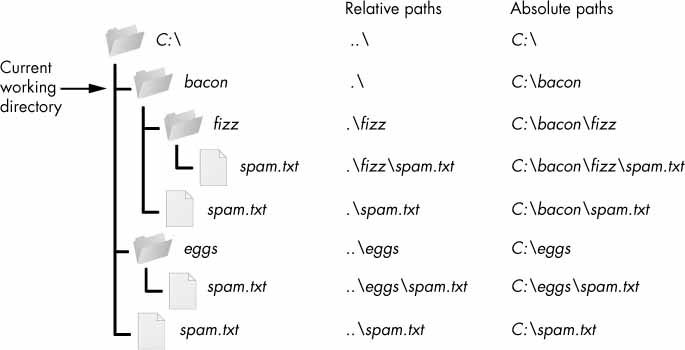

with open("datoteka.txt", mode="r", encoding="utf-8") as dat:
print("datoteka.txt")
print(dat.read())datoteka.txt
To je en stavek.
To je drugi.Gradivo za to poglavje je https://automatetheboringstuff.com/2e/chapter9/
Če vas zanima več, tudi https://automatetheboringstuff.com/2e/chapter10/
Primer branja iz datoteke z vaj: temp.txt (Vir: ARSO), temp.csv (Vir: ARSO), temp.py
Datoteke so shranjene na različnih nosilcih (npr. trdi disk, SSD, DVD, USB ključ, …). Prostor, ki je na voljo na nosilcu lahko razdelimo na več ločenih delov, ki jim rečemo particije. Primer: trdi disk z 1000 GB bi lahko razdelili na dve particiji C z 100 GB in D z 900 GB. Vsaka particija na nosilcih, ki so priklopljeni na računalnik, dobi svojo črko (to velja za Windows, drugje je drugače), npr. USB ključi so pogosto pod E ali F.
Na računalniku datoteke organiziramo v mape, ki so lahko gnezdene. Na vrhu imamo korensko mapo (root folder). Na Linux in macOS je to / na Windowsu pa C:\, kjer je C ime particije.
Vsaki datoteki ustreza ena absolutna pot. To je “naslov”, pod katero jo lahko najdemo. Primer: C:\bacon\fizz\spam.txt. Pot vsebuje vse mape, v katerih se datoteka nahaja, ločene z \ (na Windowsu; na Linux in macOS je ločilo /), ime datoteke, piko in končnico datoteke, ki določa njen tip.

Relativna pot do datoteke je pot glede na neko drugo mapo. Za zgornji primer: glede na mapo bacon je relativna pot do datoteke .\fizz\spam.txt.
Pika pomeni trenutno mapo.
Če bi bila trenutna mapa eggs, bi bila relativna pot do prejšnje datoteke glede na eggs enaka ..\bacon\fizz\spam.txt.
Dve piki pomenita eno mapo višje v hierarhiji (parent folder) glede na trenutno mapo.
Če bi želeli iti dve mapi višje bi uporabili ..\.., npr. iz mape fizz v mapo eggs pridemo z ..\..\eggs, itd.
Za podrobnejši razlago in več primerov glej gradivo: https://automatetheboringstuff.com/2e/chapter9/
Podobno kot v Raziskovalcu (File Explorer) se tudi v ukaznem pozivu (Terminal) v nekem trenutku nahajamo v neki mapi (ang. Current working directory ali CWD). Ta mapa je vedno napisana na začetku vrstice. V ukaznem pozivu najprej napišemo ukaz nato parametre, ki jih želimo podati, ločene s presledki. Ukaz izvedemo s tipko Enter.
V neko mapo se lahko premaknemo z ukazom cd, ki mu kot argument podamo pot (relativno ali absolutno do mape, v katero se želimo premakniti.
Ukaz dir izpiše vse datoteke in mape, ki se nahajajo v trenutni mapi.
Glej tudi: https://ucilnica.fmf.uni-lj.si/mod/page/view.php?id=2505
Za delo z datotečnim sistemom je na voljo modul os. Posamezne funkcije, njihove parametre in uporabo lahko poiščete v uradni dokumentaciji ali drugod na spletu. Spodaj parametri funkcij niso napisani!
Nekaj najbolj uporabnih:
os.getcwd() vrne trenutno mapo (CWD)os.chdir() nastavi trenutno mapo na podano potos.listdir() vrne seznam poti do datotek in map, ki se nahajajo v mapi, do katere vodi potos.mkdir() ustvari novo mapo, ki se nahaja na podani potios.rename() preimenuje mapo, prvi parameter je pot mape, drugi pa nova pot (z novim imenom)os.remove() izbriše datoteko, ki se nahaja na podani potios.rmdir() izbriše prazno mapo, ki se nahaja na podani potiZa delo s potmi je na voljo knjižnica os.path, kjer so pogosto uporabljane funkcije:
os.path.exists() vrne True, če podana pot obstajaos.path.join() stakne dve poti v eno, pri čemer ustrezno poskrbi za prava ločila glede na OSos.path.abspath() vrne absolutno pot, ki ustreza podani relativni poti (glede na trenutno mapo)os.path.relpath() vrne relativno pot, ki ustreza podani absolutni poti (glede na trenutno mapo)os.path.isfile() vrne True, če pot vodi do datotekeos.path.isdir() vrne True, če pot vodi do mapeDatoteko odpremo v načinu za pisanje mode="w" in uporabimo funkcijo write(), ki zapiše niz v datoteko. Znak \n pomeni novo vrstico. Če želimo zapisati znak \ moramo v Pythonu napisati \\. Več o uporabi posebnih znakov v Pythonu: https://www.w3schools.com/python/gloss_python_escape_characters.asp
potdodatoteke = "datoteka.txt"
with open(potdodatoteke, mode="w", encoding="utf-8") as dat:
dat.write("To je ")
dat.write("en stavek.\nTo je drugi.")with open("datoteka.txt", mode="r", encoding="utf-8") as dat:
print("datoteka.txt")
print(dat.read())datoteka.txt
To je en stavek.
To je drugi.Namesto dat.write("niz") se lahko uporablja tudi print("niz", file=dat), kjer odprto datoteko podamo kot parameter.
Datoteko odpremo v načinu za branje mode="r" in uporabimo metodo read(), ki vrne celotno vsebino datoteke naenkrat v obliki niza.
with open("datoteka.txt", mode="r", encoding="utf-8") as datoteka:
vsebina = datoteka.read()
print(vsebina)To je en stavek.
To je drugi.Uporaba argumenta mode je opisana na dnu strani. Klicu open lahko podamo tudi neobvezni argument encoding, ki poda kodno tabelo, v kateri je napisana datoteka. Privzeta vrednost tega argumenta je na šolskih (in najverjetneje tudi vaših) Windows računalnikih windows-1252, kar je nekoliko zastarel standard. Zato je dobra praksa uporaba parametra encoding="utf-8", s čimer uporabimo Unicode, ki se danes uporablja skoraj povsod. Na macOS in Linux je vrednost utf-8 že privzeta.
Z metodo readlines() dobimo seznam, v katerem so posamezne vrstice iz datoteke.
with open("datoteka.txt", mode="r", encoding="utf-8") as datoteka:
vrstice = datoteka.readlines()
print(vrstice)['To je en stavek.\n', 'To je drugi.']Po vrsticah datoteke lahko gremo z zanko for.
vrstice = []
with open("datoteka.txt", mode="r", encoding="utf-8") as datoteka:
for line in datoteka:
vrstice.append(line)
print(vrstice)['To je en stavek.\n', 'To je drugi.']je neobvezni argument funkcije open(). Privzeta vrednost je mode="rt". Zato nam v zgornjih primerih ni bilo treba pisati t (je že privzet poleg druge črke, ki jo podamo (r ali w)). S posameznimi črkami povemo, kaj želimo z datoteko početi.
| oznaka | opis | opomba |
|---|---|---|
| r | branje | če datoteka ne obstaja, sproži napako |
| w | pisanje | če datoteka ne obstaja, ustvari novo; če obstaja, izbriše prejšnjo vsebino datoteke |
| a | append | če datoteka ne obstaja, ustvari novo; če obstaja, NE izbriše prejšnje vsebine |
| x | ustvari datoteko, pisanje | če datoteka že obstaja, sproži napako |
| + | pisanje in branje | |
| t | za delo s tekstovnimi datotekami | npr. .txt, .csv, .tex, .html, .py |
| b | za delo s binarnimi datotekami | npr. slike |
Nekaj lastnosti je zbranih v spodnji tabeli:
| lastnost \ kombinacija črk | r | r+ | x | x+ | w | w+ | a | a+ |
|---|---|---|---|---|---|---|---|---|
| branje | x | x | x | x | x | |||
| pisanje | x | x | x | x | x | x | x | |
| datoteka mora obstajati | x | x | ||||||
| datoteka ne sme obstajati | x | x | ||||||
| zbriše prejšnjo vsebino datoteke | x | x | ||||||
| pisanje na konec datoteke | x | x |
K zgornjim kombinacijam lahko dodamo še t ali b.